After completing this lesson, students will be able to
explain the special features of carbon.
know about the isomerism and allotropic forms of carbon compounds.
differentiate between the properties of graphite and diamond.
recognise the various inorganic carbon compounds with their uses.
know the common properties of carbon compounds.
identify the codes of various plastics.
understand the effects of plastics on human life and environment.
know the legal measures to prevent plastic pollution.
Carbon is one of the most important non-metallic element. Antoine Lavoisier named Carbon from the Latin word ‘Carbo’ meaning coal. This is because carbon is the main constituent of coal. Coal is a fossil fuel developed from prolonged decomposition of buried plants and animals. So, it is clear that all the life forms contain carbon. The earth’s crust contains only 0.032 percent of carbon Bracket OPEN That is, 320 parts per million by weight bracket closed in the form of minerals like carbonates, coal and petroleum and the atmosphere has only 0.03 percent of carbon dioxide Bracket OPEN That is, 300 parts per million by weight bracket closed. Even though available in small amount in nature, carbon compounds have an immense importance in everyday life.
Carbon is present in our muscles, bones, organs, blood and other components of living matter. A large number of things which we use in our daily life are made up of carbon compounds. So, without carbon there is no possibility for the existence of plants and animals including human. Thus, Carbon Chemistry is also called as Living Chemistry. In this lesson we will study about the special features of carbon, its properties and also about plastic which are the catenated long chain compounds.
Carbon has been known since ancient times in the form of soot, charcoal, graphite and diamonds. Ancient cultures did not realize, of course, that these substances were different forms of the same element.
In 1772, French scientist Antoine Lavoisier pooled resources with other chemists to buy diamond, which they placed in a closed glass jar.They focused the Sun’s rays on the diamond with a remarkable giant magnifying glass and saw the diamond burn and disappear. Lavoisier noted that the overall weight of the jar was unchanged and that when it burned, the diamond had combined with oxygen to form carbon dioxide. He concluded that diamond and charcoal were made of the same element hyphan carbon.
In 1779, Swedish scientist Carl Scheele showed that graphite also burned to form carbon dioxide. In 1796, English chemist Smithson Tennant established that diamond is pure carbon and not a compound of carbon and it burned to form only carbon dioxide. Tennant also proved that when equal weights of charcoal and diamonds were burned, they produced the same amount of carbon dioxide.
In 1855, English chemist Benjamin Brodie produced pure graphite from carbon, proving graphite is a form of carbon. Although it had been previously attempted without success, in 1955 American scientist Francis Bundy and his co-workers at 'General Electric' company finally demonstrated that graphite could be transformed into diamond at high temperature and pressure.
In 1985, Robert Curl, Harry Kroto and Richard Smalley discovered fullerenes, a new form of carbon in which the atoms are arranged in soccer-ball shapes. Graphene, consists of a single layer of carbon atoms arranged in hexagons. Graphene’s discovery was announced in 2004 by Kostya Novoselov and Andre Geim, who used adhesive tape to detach a single layer of atoms from graphite to produce the new allotrope. If these layers were stacked upon one other, graphite would be the result. Graphene has a thickness of just one atom.
Carbon is found both in free state as well as combined state in nature. In the pre-historic period, ancients used to manufacture charcoal by burning organic materials. They used to obtain carbon compounds both from living things as well as non-living matter. Thus, in the early 19th century, Berzelius classified carbon compounds based on their source as follows
Organic Carbon Compounds: These are the compounds of carbon obtained from living organisms such as plants and animals. Example Ethanol, cellulose, Starch.
Inorganic Carbon Compounds: These are the compounds containing carbon but obtained from non-living matter. Example Calcium Carbonate, Carbon Monoxide, Carbon dioxide.
There are millions of organic carbon compounds available in nature and also synthesized manually. Organic carbon compounds contain carbon connected with other elements like hydrogen, oxygen, nitrogen, sulphur etc. Thus, depending on the nature of other elements and the way in which they are connected with carbon, there are various classes of organic carbon compounds such as hydrocarbons, alcohols, aldehydes and ketones, carboxylic acids, amino acids, etc. You will study about organic carbon compounds in your higher classes.
As compared to organic compounds, the number of inorganic carbon compounds are limited. Among them oxides, carbides, sulphides, cyanides, carbonates and bicarbonates are the major classes of inorganic carbon compounds. Formation, properties and uses of some of these compounds are given in Table 15.1
The number of carbon compounds known at present is more than 5 million. Many newer carbon compounds are being isolated or prepared every day. Even though the abundance of carbon is less, the number of carbon compounds alone is more than the number of compounds of all the elements taken together. Why is it that this property is seen in carbon and in no other elements question mark Because, carbon has the following unique features.
Tabe 15.1 Inorganic carbon compounds was given below
Compounds |
Formation |
Properties |
Uses |
Carbon monoxide Bracket OPEN CO bracket closed |
Not a natural component of air. Mainly added to atmosphere due to incomplete combustion of fuels. |
Colourless, odourless, highly toxic, sparingly soluble in water. |
Main component of water gas Bracket OPEN CO plus H2 bracket closed. Reducing agent. |
Carbon dioxide Bracket OPEN C O2 bracket closed |
Occurs in nature as free and combined forms. Combined form is found in minerals like limestone, magnesite. Formed by complete combustion of carbon or coke. |
Colourless, odourless, tasteless Stable, highly soluble in water, takes part in photosynthesis. |
Fire extinguisher, preservative for fruits, making bread, to manufacture urea, carbonated water, nitrogenous fertilizers, dry ice in refrigerator |
Calcium Carbide Bracket OPEN Ca C2 bracket closed |
Prepared by heating calcium oxide and coke. |
Greyish black solid. |
To manufacture graphite and hydrogen. To prepare acetylene gas for welding. |
Carbon disulphide Bracket OPEN CS2 bracket closed |
Directly prepared from Carbon and Sulphur |
Colourless, inflammable, highly poisonous gas. |
Solvent for sulphur. To manufacture rayon, fungicide, insecticide |
Calcium Carbonate Bracket OPEN Ca C O3bracket closed |
Prepared by passing Carbon dioxide into the solution of slaked lime |
Crystalline solid, insoluble in water. |
Antacid |
Sodium bicarbonate Bracket OPEN NaHCO3 bracket closed |
Formed by treating sodium hydroxide with carbonic acid Bracket OPEN H2CO3 bracket closed |
White crystalline substance, sparingly soluble in water |
Preparation of sodium carbonate, baking powder, antacid |
Catenation is binding of an element to itself or with other elements through covalent bonds to form open chain or closed chain compounds. Carbon is the most common element which undergoes catenation and forms long chain compounds. Carbon atom links repeatedly to itself through covalent bond to form linear chain, branched chain or ring structure.
Figure 15.1 Catenation in carbon image was given below
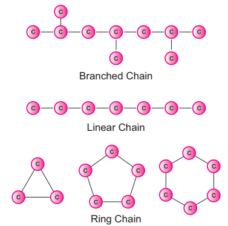
This property of carbon itself is the reason for the presence of large number of organic carbon compounds. So organic chemistry essentially deals with catenated carbon compounds.
Box item OPEN
With the help of your teacher, try to classify the following as organic and inorganic compounds.
HCN C O2, Propane, PVC, C O, Kerosene, LPG, Coconut oil, Wood, Perfume, Alcohol, Na2 C O3, Ca C O3. MgO, Cotton, Petrol. box item ends
For example, starch and cellulose contain chains of hundreds of carbon atoms. Even plastics we use in our daily life are macro molecules of catenated carbon compounds.
Another versatile nature of carbon is its tetravalency. The shell electronic configuration of carbon is 2,4 Bracket OPEN Atomic number: 6 bracket closed. It has four electrons in its outermost orbit. According to Octet Rule, carbon requires four electrons to attain nearest noble gas Bracket OPEN Neon bracket closed electronic configuration. So carbon has the tendency to share its four electrons with other atoms to complete its octet. This is called its tetravalency. Thus, carbon can form four covalent bond with other elements.
For example, in methane, carbon atom shares its four valence electrons with four hydrogen atoms to form four covalent bonds and hence tetravalent.
image was given below
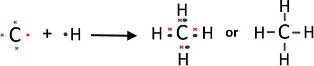
As seen above, the tetravalent carbon can form four covalent bonds. With this tetravalency, carbon is able to combine with other elements or with itself through single bond, double bond and triple bond. As we know, the nature of bonding in a compound is the primary factor which determines the physical and chemical characteristics of a compound.
So, the ability of carbon to form multiple bonds is the main reason for the existance of various classes of carbon compounds. Table 15.2 shows one of such classes of compounds called ‘hydrocarbons’ and the type of bonding in them.
When one or more hydrogen in hydrocarbons is replaced by other elements like O, N, S, halogens, etc., a variety of compounds having different functional groups are produced. You will study about them in your higher class.
Table 15.2 Hydrocarbon table was given below
Type of bond |
Example
|
Class of the compound |
Single Bond |
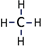 Methane |
Alkane |
Double Bond |
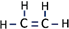 Ethene |
Alkene |
Triple Bond |
H single bond -C triple bond ≡ C single bond -H Ethyne |
Alkyne |
Aisomerism is another special feature of carbon compounds especially found in catenated organic compounds. Let us consider the molecular formula of an organic compound C2 H6O. Can you name the compound question mark You can’t. Because the molecular formula of an organic compound represents only the number of different atoms present in that compound. It does not tell about the way in which the atoms are arranged and hence its structure. Without knowing the structure, we can’t name it.
A given molecular formula may lead to more than one arrangement of atoms. Such compounds are having different physical and chemical properties. This phenomenon in which the same molecular formula may exhibit different structural arrangement is called aisomerism. Compounds that have the same molecular formula but different structural formula are called isomers Bracket OPEN Greek, aisos = equal, meros = parts bracket closed.
The given formula C2 H6 O is having two kinds of arrangement of atoms as shown below.
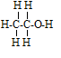
Bracket OPEN a bracket closed CH3 single bond -CH2 single bond –O HImage was given below
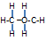
Bracket OPEN b bracket closed CH3 single bond -O single bond -CH3
Both the compounds have same molecular formula but different kind of arrangements. In compound ‘a’, the oxygen atom is attached to a hydrogen and a carbon. It is an alcohol. Whereas in compound ‘b’, the oxygen atom is attached to two carbon atoms and it is an ether. These compounds have different physical and chemical properties. You will study about isomerism in detail in higher classes.
Allotropy is a property by which an element can exist in more than one form that are physically different and chemically similar. The different forms of that element are called its allotropes. The main reason for the existence of allotropes of an element is its method of formation or preparation. Carbon exists in different allotropic forms and based on their physical nature they are classified as below.
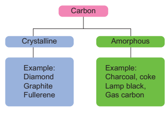
In diamond, each carbon atom shares its four valence electrons with four other carbon atoms forming four covalent bonds.
Here the atoms are arranged in repeated tetrahedral fashion which leads to a three dimensional structure accounting for its hardness and rigidity.
In graphite, each carbon atom is bonded to three other carbon atoms through covalent bonds in the same plane.
This arrangement forms hexagonal layers which are held together one over other by weak Vander Waals forces.
Since the layers are held by weak forces, graphite is softer than diamond.
The third crystalline allotrope of carbon is fullerene. The best known fullerene is Buckminster fullerene, which consists of 60 carbon atoms joined together in a series of 5- and 6- membered to form spherical molecule resembling a soccer ball. So its formula is C 60.
This allotrope was named as Buckminster fullerene after the American architect
Table 15.3 Difference between Diamond and Graphite table was given below
Diamond |
Graphite |
Each carbon has four covalent bonds. |
Each carbon has three covalent bonds. |
Hard, heavy and transparent. |
Soft slippery to touch and opaque. |
It has tetrahedral units linked in three dimension. |
It has planar layers of hexagon units. |
It is a non-conductor of heat and electricity. |
It is a conductor of heat and electricity. |
Figure 15.2 Crystalline forms of Carbon image was given below
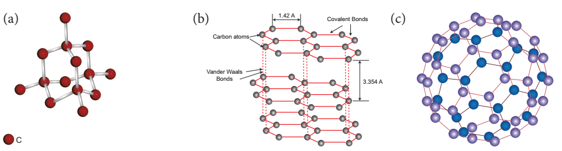
Buckminster fuller. Because its structure reminded the framework of dome shaped halls designed by Fuller for large international exhibitions, it is called by the pet name Bucky Ball. A large family of fullerenes exists, starting at C20 and reaching up to C540.Box item OPEN
Take a football since it resembles to Buckminster fullerene. Count how many hexagonal and pentagonal panels are in it. Every corner is considered as one carbon. Compare your observation with fullerene and discuss with your friends. box item ends
Box item OPEN
Graphene is most recently produced allotrope of carbon which consists of honeycomb shaped hexagonal ring repeatedly arranged in a plane. Graphene is the thinnest compound known to man at one atom thick. It is the lightest material known Bracket OPEN with 1 square metre weighing around 0.77 milligrams bracket closed and the strongest compound discovered Bracket OPEN 100 to 300 times stronger than steel bracket closed. It is a best conductor of heat at room temperature. Layers of graphene are stacked on top of each other to form graphite, with an inter planar spacing of 0.335 nanometres. The separate layers of graphene in graphite are held together by Vander Waals forces. box item ends
Image was given below
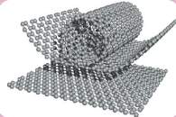
In amorphous form of carbon, carbon atoms are arranged in random manner. These form of carbon are obtained when wood is heated in the absence of air. Example, charcoal
Carbon is a non-metal found in various allotropic forms from soft powder to hard solid.
All the allotropic forms of carbon are solids whereas its compounds exist in solid, liquid and gaseous state.
Amorphous forms of carbon and graphite are almost black in colour and opaque. Diamond is transparent and shiny
Its amorphous forms have low melting and boiling point compared to crystalline forms.
Carbon is insoluble in water and other common solvents. But some of its compounds are soluble in water and other solvents. Example, Ethanol, C O2 are soluble in water.
Elemental carbon undergoes no reaction at room temperature and limited number of reactions at elevated temperatures. But its compounds undergo large number of reactions even at room temperature.
Carbon combines with oxygen to form its oxides like carbon monoxide Bracket OPEN C O bracket closed and carbon dioxide Bracket OPEN C O2 bracket closed with evolution of heat. Organic carbon compounds like hydrocarbon also undergo oxidation to form oxides and steam with evolution of heat and flame. This is otherwise called combustion.
2 C with subscript Bracket OPEN s bracket closed plus O2 with subscript Bracket OPEN g bracket closed gives 2 C O with subscript Bracket OPEN g bracket closed plus heat
C with subscript Bracket OPEN s bracket closed plus O2 with subscript Bracket OPEN g bracket closed gives C O2 with subscript Bracket OPEN g bracket closed plus heat
CH4 with subscript Bracket OPEN g bracket closed plus 2 O2 with subscript Bracket OPEN g bracket closed gives CO2 with subscript Bracket OPEN g bracket closed plus 2H2 O with subscript Bracket OPEN g bracket closed plus heat
Carbon reacts with steam to form carbon monoxide and hydrogen. This mixture is called water gas.
C with subscript Bracket OPEN s bracket closed plus H2O with subscript Bracket OPEN g bracket closed gives C O with subscript Bracket OPEN g bracket closed plus H2Bracket OPEN g bracket closed
With sulphur, carbon forms its disulphide at high temperature.
C with subscript Bracket OPEN s bracket closed plus 2S with subscript Bracket OPEN g bracket closed gives C S 2 with subscript Bracket OPEN g bracket closed
At elevated temperatures, carbon reacts with some metals like iron, tungsten, titanium, etc. to form their carbides.
Tungesten plus Carbon gives Tungesten carbide
W plus C gives WC
It is impossible to think of our daily life without carbon compounds. Over time, a large number of carbon compounds have been developed for the improvement of our lifestyle and comfort. They include carbon based fuels, carbon nanomaterials, plastics, carbon filters, carbon steel, etc.
Even though carbon and its compounds are vital for modern life, some of its compounds like C O, cyanide and certain types of plastics are harmful to humans. In the following segment, let us discuss the role of plastics in our daily life and how we can become aware of the toxic chemicals that some plastics contain.
Plastics are a major class of catenated organic carbon compounds. They are made from long chain organic compounds called ‘polymer resins’ with chemical additives that give them different properties. Different kinds of polymers are used to make different types of plastics. Plastics are everywhere. They are convenient, cheap and are used in our everyday life. Plastics have changed the way we live. They have helped improve health care, transport and food safety. Plastics have allowed many breakthroughs in technologies such as smartphones, computers and the internet. It is clear that plastic has given our society many benefits. But these benefits have come at a cost.
Plastics take a very long time to fully break down in nature.
The microbes that break down plastic are too few in nature to deal with the quantity of plastics we produce.
A lot of plastic does not get recycled and ends up polluting the environment.
Some types of plastics contain harmful chemical additives that are not good for human health.
Burning of plastics releases toxic gases that are harmful to our health and contribute to climate change.
One-time use and throwaway plastics end up littering and polluting the environment.
In order to know which plastics are harmful, you will need to learn the secret ‘language’ of plastics Bracket OPEN resin codes bracket closed.
Look at the following pictures. One is a plastic sachet in which milk is distributed to consumers and the other is a plastic food container. Observe the code shown on it Bracket OPEN circled bracket closed. Do you know what this code means question mark It is called a ‘resin code’. The resin code represents the type of polymer used to make the plastic.
Figure 15.3 Plastic items used in daily life image was given below
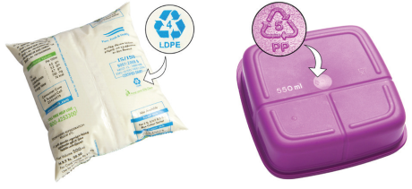
Plastics should be recycled or disposed of safely. Certain types of plastics should be avoided so that they do not end up polluting the environment or harming our health. Each plastic is composed of a different polymer or set of molecules. Different molecules do not mix when plastics are recycled, it is like trying to recycle paper and glass together. For this reason, they need to be separated. The resin codes of plastics were designed in 1988 and are a uniform way of classifying the different types of plastic which help recyclers in the sorting process.
The secret resin codes are shown as three chasing arrows in a triangle. There is a number in the middle or letters under the triangle Bracket OPEN an acronym of that plastic type bracket closed. This is usually difficult to find. It can be found on the label or bottom of a plastic item.
The resin codes are numbered from 1 to 7. Resin codes #1 to #6 each identify a certain type of plastic that is often used in products. Resin code #7 is a category which is used for every other plastic Bracket OPEN since 1988 bracket closed that does not fit into the categories #1 to #6. The resin codes look very similar to the recycling symbol, but this does not mean that all plastics with a code can be recycled.
Figure 15.4 Resin codes image was given below
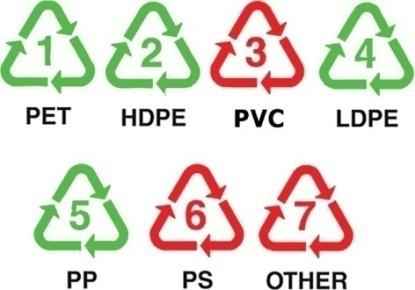
Bracket OPEN d bracket closed Where will the resin code be shown on plastic items question mark
Flip a plastic item to find the resin code on the bottom.
Image was given below
Sometimes the bottom of plastic will only have an acronym or the full name of that plastic type.
Image was given below
If you do not find it on the bottom, search for the code on the label.
Image was given below
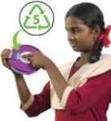
Some plastics do not have a code. The company did not follow the rules and you do not know if it is safe to use.
Image was given below
Plastics in our everyday life can be harmful for two reasons. The first reason is that some types of plastic contain chemicals that are harmful to our health. The second reason is that a lot of plastics are designed to be used just for one time. This use and throwaway plastic causes pollution to our environment.
There are three types of plastic that use toxic and harmful chemicals. These chemicals are added to plastics to give them certain qualities such as flexibility, strength, colour and fire or UV resistance. The three unsafe plastics are: PVC Bracket OPEN resin code #3bracket closed, PS Bracket OPEN resin code #6 also commonly called Thermocol bracket closed and PC/ABS Bracket OPEN resin code #7bracket closed.
Image was given below
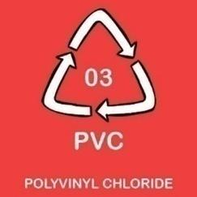
Heavy metals Bracket OPEN cadmium and lead bracket closed are added to PVC.
Phthalates Bracket OPEN chemical additive bracket closed copy our hormones.
Burning PVC releases dioxins Bracket OPEN one of the most toxic chemicals known to humans bracket closed.
Image was given below
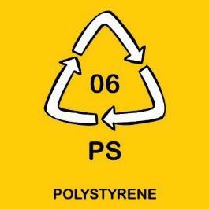
Styrene is a building block of this plastic and may cause cancer.
It takes very long time to break-down Bracket OPEN 100 to 1 million years bracket closed.
Higher amounts of toxic styrene leak into our food and drinks when they are hot or oily.
PC plastic contains Bisphenol A Bracket OPEN BPA bracket closed.
BPA leaks out of PC products used for food and drinks.
BPA increases or decreases certain hormones and changes the way our bodies work.
Image was given below
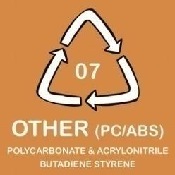
Styrene causes problems for our eyes, skin, digestive system and lungs.
Brominated Flame Retardants Bracket OPEN BFRs bracket closed are often added.
Studies show that toxic chemicals leak from this plastic.
Use and throwaway plastics cause short and long-term environmental damage. Half of all the plastic made today is used for throwaway plastic items. These block drains and pollute water bodies. One-time use plastic causes health problems for humans, plants and animals. Some examples are plastic carry bags, cups, plates, straws, water pouches, cutlery and plastic sheets used for food wrapping
Figure 15.5 One-time use plastic items image was given below
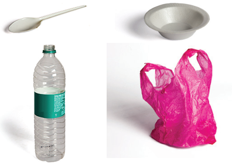
These items take a few seconds to be made in a factory. You will use them for a very short time. Once you throw them away, they can stay in our environment for over a 1,000 years causing plastic pollution for future generations. We need rules and laws to protect people and the environment from plastic pollution.
As we know, the Government of India is progressively taking various legal initiatives to stop plastic pollution by making some provisions and amendments in the Environment Bracket OPEN Protection bracket closed Act, 1988. With reference to this act, Government of Tamil Nadu has taken a step forward to ban the usage of some kind of plastic items Bracket OPEN Environment and Forests Department, T.N. G.O. Number 84, dated 25/06/2018 bracket closed.
As per the government order cited above, the Tamil Nadu Government has banned the usage of one-time use and throwaway plastics from 1st January 2019. This excellent legislation is designed to protect Tamil Nadu from plastic pollution.
Rules which ban the production, storage, supply, transport, sale and distribution of onetime use plastics are extremely effective. They are successful because they target all sections of society–manufacturer, supplier, shopkeeper and customer. This progressive initiative taken by the State of Tamil Nadu leads by example for the rest of the nation.
You can find below some key aspects of the new rules along with science-based facts why these items have been banned in Tamil Nadu.
Globally we use 2 million plastic bags each minute.
97 percent of plastic bags do not get recycled.
Animals eat plastic bags by accident as they contain food. A cow was found with over 70 kilos of plastic in its stomach.
Dirty plastics Bracket OPEN like a used plate bracket closed are difficult to recycle.
Most of the one-time use plates are made from Polystyrene Bracket OPEN resin code # 6bracket closed which is harmful to our health.
Plates will be used for just 20 minutes but stay in the environment for over a 1,000 years.
Water pouches are often littered, increasing plastic pollution.
The blue print Bracket OPEN ink bracket closed on the clear plastic pouch decreases the recycling value.
Once a water pouch is used, it is difficult to recycle as it contains leftover water and gets covered in dirt.
Plastic straws are too light and small to be recycled.
Straws are one of the top 10 items which are found in the plastic pollution in oceans
90 percent of seabirds have ingested plastics such as straws.
Plastic sheets used on top of plates get dirty and cannot be recycled.
More chemicals leak from plastic into food when it is hot, spicy or oily.
Animals such as cows, goats, and dogs eat plastic by accident because it smells like food.
You play a very important role and have the power to minimise plastic pollution. Ask yourself, is this plastic safe or harmful plastic question mark If it is not a harmful plastic type, is it a onetime use plastic item question mark These questions and the science-based knowledge will help you to reduce unnecessary plastic pollution.
As a student, you can share your scientific knowledge on plastics and their effects with your parents, relatives and friends to make them aware of plastic pollution.
You can help by teaching them how to avoid harmful plastics by searching for the resin codes.
You can educate them about the new rules and how important it is to stop one-time use plastics.
Do not litter the environment by throwing plastic items.
Do not use Thermocol Bracket OPEN resin code #6 PS bracket closed for your school projects.
Do not use one-time use or throwaway plastics like plastics bags, tea cups, Thermocol plates and cups, and plastic straws.
Do not burn plastics since they release toxic gases that are harmful to our health and contribute to climate change.
Burning PVC plastic releases dioxins which are one of the most dangerous chemicals known to humans.
Do not eat hot or spicy food items in plastic containers.
Segregate your plastic waste and hand this over to the municipal authorities so that it can be recycled.
Educate at least one person per day about how to identify the resin codes and avoid unsafe plastics Bracket OPEN resin code #3 PVC, #6 PS and #7 ABS/PC bracket closed.
Carbon is an inseparable chemical entity associated with living things.
Carbon chemistry is also called as living chemistry.
Carbon is found both in free state as well as combined state in nature.
Friedrich Wohler is called Father of Modern Organic Chemistry.
Carbon atom links repeatedly to itself through covalent bond to form linear chain, branched chain or ring structure.
Charcoal, graphite and diamond are the allotropes of carbon.
In diamond atoms are arranged in repeated tetrahedral fashion.
All the allotropic forms of carbon are solids whereas its compounds exist in
solid, liquid and gaseous state.
The resin code represents the polymer used in making of plastics. The resin codes are numbered from 1 to 7.
One-time use plastic causes health problems for humans, plants and animals.
Allotropes :Different forms of an element.
Allotropy : Property by which an element can exist in more than one form.
Catenation : Binding of an element to itself or with other elements through covalent bonds.
Harmful plastics: Plastic in which toxic and harmful chemicals are used.
Isomerism : Phenomenon in which same molecular formula may exhibit different structural arrangement.
Isomers : Compounds that have same molecular formula but different structural formula.
One-time use plastic : Use and throw away plastics.
Organic carbon compounds : Compounds of carbon obtained from living organisms.
Plastics :Major class of catenated organic carbon compounds made from liquid polymers called ‘resins’ added with some additives.
Tetravalency Tendency of carbon to share its four electrons with that of atoms to complete its octet.